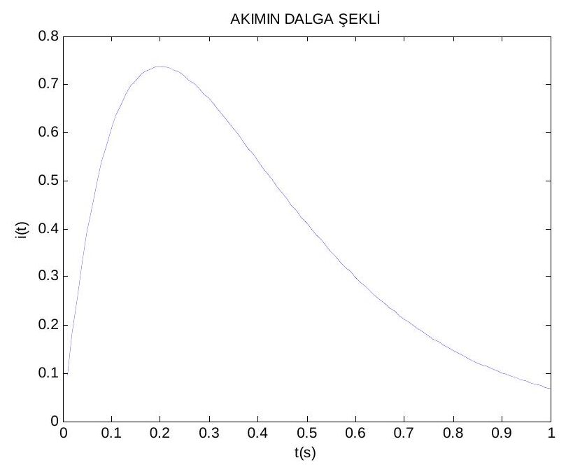
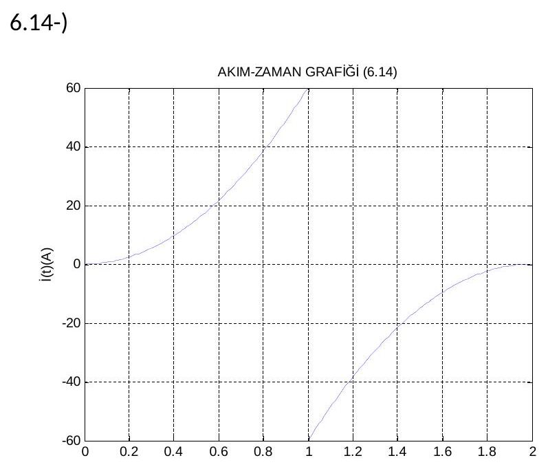

· EEM202
EEM202 Devre Teorisi II: Ödev 1–2, Fazör Dönüşümleri ve MATLAB ile Akım-Gerilim Grafikleri
EEM202 – Devre Teorisi II · 10.03.2014 · 16.10.2026
Bu yazı, Başkent Üniversitesi Elektrik-Elektronik Mühendisliği EEM202 Devre Teorisi II dersinin iki ödevinin arkadaşlar tarafından hazırlanmış çözümlerini bir araya getiriyor. Ödev-1 (Mart 2014) fazör dönüşümleri üzerine el yazısı bir çözüm; fotoğraflanmış sayfalardan metne aktarıldı, fotoğraflar yayınlanmıyor. MATLAB ödevleri ise Word dosyalarıydı: akım ve gerilim ifadelerinin MATLAB komutlarıyla çizilmiş grafikleri. Kişisel bilgiler çıkarıldı. MATLAB çalışmaları sayfa görüntülerinden PDF'e çevrilerek yazının sonunda ZIP olarak indirilebilir.
Ödev-1: Fazörler
Ödev kâğıdındaki sorular:
- v₁(t) = 12 cos(377t − 425°) V ve v₂(t) = 18 sin(2513t + 4,2°) V gerilimlerini fazörlere çeviriniz.
- Frekans 400 Hz olduğunda V₁ = 10∠20° ve V₂ = 12∠−60° fazörlerini zaman bölgesine çeviriniz.
- i = 5 cos(ωt + 36,87°) + 10 cos(ωt − 53,13°) A ve V = (20 + j80 − 30∠15°) V ifadelerini tek terim hâlinde yazınız.
- v = 120 sin(377t + 60°) V kaynağına 50 µF'lık kondansatör ile 20 Ω + 40 mH'lik seri kol paralel bağlanmıştır; kaynak akımını bulunuz.
Çözümler
1) V₁ = 12∠−425° V. İkinci gerilim kosinüse çevrilerek: v₂(t) = 18 sin(2513t + 4,2°) = 18 cos(2513t + 94,2°) → V₂ = 18∠94,2° V.
Not: −425° açısı −65° ile aynıdır (V₁ = 12∠−65° V). sin x = cos(x − 90°) olduğundan doğrusu v₂(t) = 18 cos(2513t − 85,8°), yani V₂ = 18∠−85,8° V olmalıdır; çözümde 90° eklenmiş.
2) ω = 2πf = 2(3,14)(400) = 2512 rad/s:
- v₁(t) = 10 cos(2512t + 20°) V
- v₂(t) = 12 cos(2512t − 60°) V
3) Akım fazörü:
- I = 5∠36,87° + 10∠−53,13° = 5(0,80 + j0,60) + 10(0,60 − j0,80) = 4 + j3 + 6 − j8 = 10 − j5
- |I| = √(10² + 5²) = 11,18; θ = arctan(−5/10) = −26,57° → i(t) = 11,18 cos(ωt − 26,57°) A
Gerilim fazörü:
- V = 20 + j80 − 30(cos 15° + j sin 15°) = 20 + j80 − 29,1 − j7,8 = −9,1 + j72,2
- |V| = √(9,1² + 72,2²) = 72,77; çözümde θ = arctan(72,2/−9,1) = −82,81° alınmış.
Not: Gerçel kısım negatif, sanal kısım pozitif olduğundan fazör ikinci bölgededir: θ = 180° − 82,8° ≈ 97,2°, yani v(t) ≈ 72,8 cos(ωt + 97,2°) V olmalıdır.
4) v = 120 sin(377t + 60°) = 120 cos(377t − 30°) olarak yazılmalıdır; çözümde ise 120 cos(377t + 150°) alınmış. Empedanslar:
- Z_R = 20 Ω, Z_L = jωL = j(377)(0,04) = j15,08 Ω, Z_C = −j/(ωC) = −j/(377 · 50·10⁻⁶) = −j53,05 Ω
- Z_eş = (20 + j15,08) ∥ (−j53,05) = (800,45 − j1061,6)/(20 − j37,97) = 1329,55∠−53,0° / 43∠−62,24° = 30,92∠9,18° Ω
- I = 120∠150° / 30,92∠9,18° = 3,88∠140,82° A → çözümün sonucu: i(t) = 3,88 cos(377t + 140,82°) A
Not: Hesap doğru (Z_eş ≈ 30,96∠9,2° Ω); ancak sinüsten kosinüse geçişte sin x = cos(x − 90°) kullanılmalı. Doğru fazör V = 120∠−30° V ile i(t) ≈ 3,88 cos(377t − 39,2°) A bulunur. Çözümün açısı 180° kaymış, yani akımın işareti ters çıkmış.
MATLAB ödevleri
Ödev 1: Akım ve gerilim dalga şekilleri
i(t) = 10t·e^(−5t) A akımı ve v(t) = (1 − 5t)·e^(−5t) V gerilimi 0–1 s aralığında çizdirilmiş (v, 0,1 H'lik bir bobin için v = L·di/dt ifadesine karşılık geliyor):
t=0.01:0.01:1;
i=10*t.*exp(-5*t);
figure(1),plot(t,i);
title('AKIMIN DALGA ŞEKLİ')
xlabel('t(s)')
ylabel('i(t)')
V=(1-5*t).*exp(-5*t);
figure(1),plot(t,V);
title('VOLTAJIN DALGA ŞEKLİ')Akım t = 0,2 s'de en büyük değerine ulaşıyor: i(0,2) = 10·0,2·e⁻¹ ≈ 0,736 A. Gerilim aynı anda sıfırdan geçip negatife dönüyor.

Ödev 2: 6.14, 7.7 ve 7.51 problemleri
6.14: Parçalı akım ifadesi: 0 ≤ t ≤ 1 s için i = 60t² A, 1 ≤ t ≤ 2 s için i = −60(2 − t)² A.
t=0:0.01:1;
i=60*t.^2;
t1=1:0.01:2;
i1=-60*(2-t1).^2;
figure(1);
plot(t,i);
hold on;
plot(t1,i1);
grid;
title('AKIM-ZAMAN GRAFİĞİ (6.14)');
xlabel('t(s)');
ylabel('İ(t)(A)');
7.7: i = 2e^(−1000t) A ve i = 4e^(−125t) A akımları 0–2 s aralığında çizdirilmiş.
7.51: v = 15 − 105e^(−4000t) V ve v = 20 − 100e^(3333t) V gerilimleri 0–1 s aralığında çizdirilmiş.
Not: 7.7 ve 7.51'deki ifadelerin zaman sabitleri milisaniye mertebesinde (1/1000 s, 1/125 s, 1/4000 s); 0,01 s adımla ve 0–2 s aralığında çizilince geçici kısım tek bir örneğe sıkışıyor, grafikler boş ya da düz çizgi gibi görünüyor. Örneğin t = 0:1e-5:5e-3 gibi bir aralık seçilmelidir. Ayrıca son ifadede üs pozitif yazılmış (e^(3333t)); bu yüzden grafik −10³⁰⁵ mertebesine ıraksıyor. Sönümlü bir tepki için üs negatif olmalıdır: v = 20 − 100e^(−3333t) V.
İndirilebilir dosyalar
ZIP'te iki MATLAB ödevinin (Ödev 1: 2 sayfa, Ödev 2: 5 sayfa) sayfa görüntülerinden oluşturulmuş PDF'leri var. Ödev-1'in el yazısı fotoğrafları yayınlanmıyor.